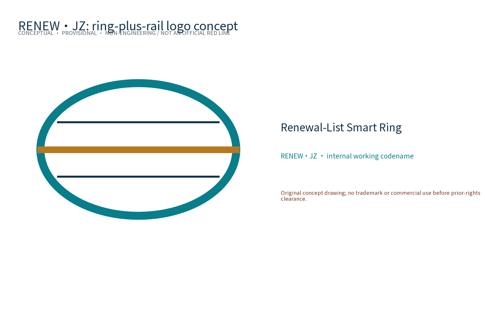

Overall structure

Three-node concepts

Land-use caliber

Mobility and blue-green

Ecosystem

Metrics

Logo direction

Evidence / 证据
Metrics: site_area_sqm=11,412,825.386 sqm, green_ratio=0.110044 and public_space_ratio=0.003167 are provisional geometry recalculations. Global AI cases=6, scenario cards=10, industry tests=3 and personas=5 are content counts.
Substantive bilingual equivalence of claims, metrics, evidence and figure placement remains for human item-by-item review.